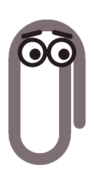
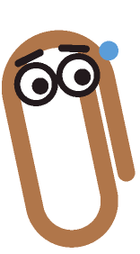
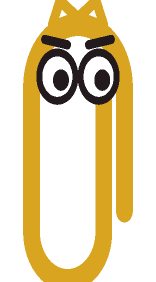
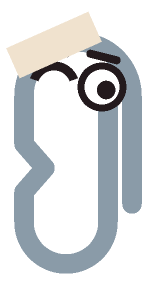
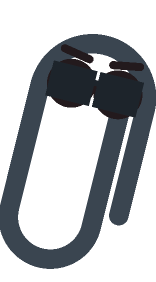
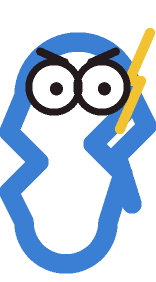
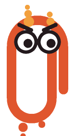

Twelve builds — each a different silhouette, face and colour. Rendered by backend/controllers/clippyBadgeArt.js; these exact PNGs are what the support ticket embeds.

Standard Issue6+ clicksplain / normal
Bronze Clip12+ clickslean / normal
Gold Clip20+ clickstall / normal
Field Repair75+ clickskinked / wink
Unbothered110+ clicksrecline / normal
Overclocked250+ clickszigzag / wide
Combustion400+ clicksmelting / normal